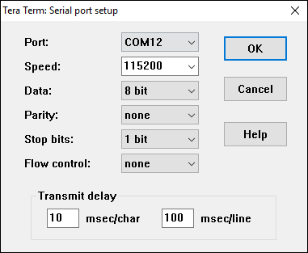
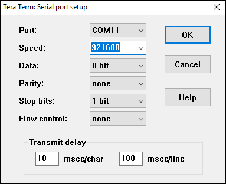
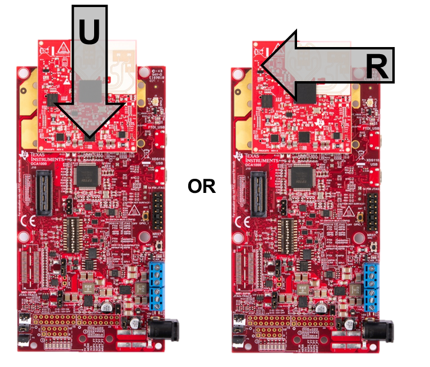
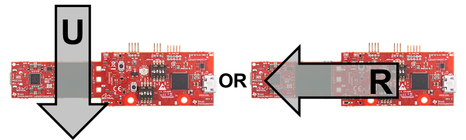
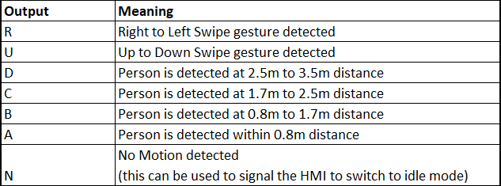
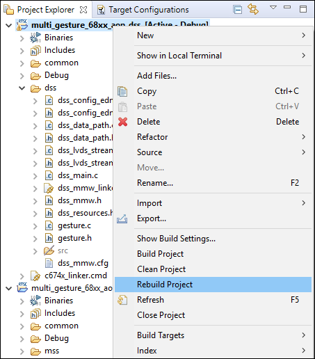
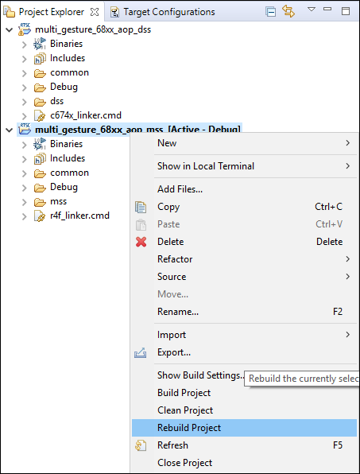

Multiple Gesture and Motion Detection Overview
===========
This lab demonstrates the use of TI single-chip millimeter-wave (mmwave) technology for detection and classification of natural gestures. The example provided in this demo can recognize two different hand gestures: Left swipe and Down swipe. In addition, the lab also demonstrates Person detection (through motion) at various ranges up to about 3.5 meters.
Such a system can be used to implement gesture based Human Machine Interfaces (HMI) which switch to a low power mode for motion/presence detection when someone is not around and switch to gesture detection mode when motion is detected near the sensor.
The lab provides full source code with CCS projects and runs on either the IWR6843ISK-ODS antenna or IWR6843AOP EVM.
# Requirements
### Prerequisite
[[y! Run Out of Box Demo
Before continuing with this lab, users should first run the out of box demo for the EVM.
This will enable users to gain familiarity with the sensor's capabilities as well as the various tools used across all labs in the mmWave Industrial Toolbox. ]]
### Required and Supported mmWave Evaluation Modules (EVM)
#### ODS antenna module with MMWAVEICBOOST
Quantity | Item
------------------|-----------------
1 | Antenna Module Board: [IWR6843ISK-ODS](http://www.ti.com/tool/IWR6843ISK-ODS)
1 | OPTIONAL: [Industrial mmWaveICBOOST](http://www.ti.com/tool/MMWAVEICBOOST) for CCS based debugging
NOTE: Images in this guide depict the older revision ODS where the MMWAVEICBOOST was required. The standalone/modular mode is supported on the new revision EVMs though not depicted.
OR
#### AOP EVM
Quantity | Item
------------------|-----------------
1 | [IWR6843AOPEVM](http://www.ti.com/tool/IWR6843AOPEVM)
1 | OPTIONAL: [Industrial mmWave Carrier Board](http://www.ti.com/tool/MMWAVEICBOOST) for CCS based debugging
[[r! IWR6843 ES2.0 Only
This lab is only compatible with ES2.0 version of IWR6843.
On ISK or ODS, check the device version on your IWR6843 using the on-chip device markings as shown below
1. If line 4 reads `678A`, you have an ES2 device. In this case, this lab is compatible with your EVM.
2. If line 4 reads `60 GHZi`, you have an older ES1 device. In this case, the lab is NOT compatible with your EVM. ES2 IWR6843ISK/IWR6843ISK-ODS boards are orderable from the EVM link above.
<img src="images/iwr6843_silicon_revision.png" width="300"/>
On AOP, the EVM must be Rev F or later. This can be distinguished by the shape of the EVM if it is as shown above.
]]
### Additional Hardware Requirements
Quantity | Item | Details
---------|--------------------------|-----------------
1 | Computer | Windows 7 or 10 PC
1 | Micro USB Cable |
1 | Power Supply | If using MMWAVEICBOOST, a 5V, 3A with 2.1-mm barrel jack (center positive). The power supply can be wall adapter style or a battery pack with a USB to barrel jack cable. <br> If using the IWR6843AOP EVM, a separate power supply is not needed as the IWR6843AOP EVM is powered by the USB connection.
### Software
Tool | Version | Download Link
----------------------------|---------------------------|--------
TI mmWave SDK | 3.5.x.x | [Link to Latest mmWave SDK](http://software-dl.ti.com/ra-processors/esd/MMWAVE-SDK/latest/index_FDS.html) To access a previous version of the mmWave SDK scroll to the bottom of the table and click the link under "MMWAVE-SDK previous release". Repeat to continue stepping back to previous versions.
mmWave Industrial Toolbox | Latest | Download and install the toolbox. Go to [Using TI Resource Explorer & the mmWave Industrial Toolbox](../../../../docs/readme.html) for instructions.
Terminal Emulator | | [TeraTerm](https://ttssh2.osdn.jp/index.html.en) or another terminal emulation software to display the gesture and motion detection information. The instructions provided in this user guide are based on [TeraTerm](https://ttssh2.osdn.jp/index.html.en)
Uniflash | Latest | Uniflash tool is used for flashing TI mmWave Radar devices. [Download offline tool](http://www.ti.com/tool/UNIFLASH) or use the [Cloud version](https://dev.ti.com/uniflash/#!/)
Silicon Labs CP210x USB to UART Bridge VCP Drivers | Latest | Only needed for AOP EVM. [https://www.silabs.com/products/development-tools/software/usb-to-uart-bridge-vcp-drivers](https://www.silabs.com/products/development-tools/software/usb-to-uart-bridge-vcp-drivers)
-----------
Quickstart
===========
The quickstart guide will cover setting up the EVM, flashing firmware, and running the demo.
## 1. Setup the EVM for Flashing Mode
* For MMWAVEICBOOST + Antenna Module setup: Follow the instructions for [Hardware Setup for Flashing in MMWAVEICBOOST Mode](../../../common/docs/hardware_setup/hw_setup_mmwaveicboost_mode_flashing.html)
* For IWR6843ISK-ODS in Standalone/Modular Mode: Follow the instructions for [Hardware Setup of IWR6843ISK/ODS for Flashing Mode](../../../common/docs/hardware_setup/hw_setup_isk_ods_modular_mode_flashing.html)
* For AOP in Standalone/Modular Mode: Follow the instructions for [Hardware Setup of IWR6843AOPEVM for Flashing Mode](../../../common/docs/hardware_setup/hw_setup_aop_modular_mode_for_flashing.html)
## 2. Flash the EVM using Uniflash
Flash the binary listed below using UniFlash. Follow the instructions for [using UniFlash](../../../common/docs/software_setup/using_uniflash_with_mmwave.html)
BIN Name | Board | Location
------------------------------|-----------------|-----------
multi_gesture_demo_68xx_aop.bin|IWR6843 ISK-ODS | `<INDUSTRIAL_TOOLBOX_INSTALL_DIR>\mmwave_industrial_toolbox_<VER>\labs\gesture_recognition\`<br>`68xx_multi_gesture_and_motion_det\prebuilt_binaries\ods`
ulti_gesture_demo_68xx_aop.bin| IWR6843AOPEVM | `<INDUSTRIAL_TOOLBOX_INSTALL_DIR>\mmwave_industrial_toolbox_<VER>\labs\gesture_recognition\`<br>`68xx_multi_gesture_and_motion_det\prebuilt_binaries\aop`
## 3. Setup the EVM for Functional Mode
* For MMWAVEICBOOST + Antenna Module setup: Follow the instructions for [Hardware Setup of MMWAVEICBOOST + Antenna Module for Functional Mode](../../../common/docs/hardware_setup/hw_setup_mmwaveicboost_mode_functional.html)
* For IWR6843ISK-ODS in Standalone/Modular Mode: Follow the instructions for [Hardware Setup of IWR6843ISK/ODS for Functional Mode](../../../common/docs/hardware_setup/hw_setup_isk_ods_modular_mode_functional.html)
* For AOP: follow the instructions for [Hardware Setup of IWR6843AOPEVM for Functional Mode](../../../common/docs/hardware_setup/hw_setup_aop_modular_mode_for_functional.html)
At this point, the EVM should be powered, connected to the PC, flashed with the demo, and put in functional mode. The hardware setup is now complete.
## 4. Run the Lab
-----------
### 1. GUI Setup
* Open two TeraTerm Instances, one each for the two EVM COM ports based on the port numbers from the Flash the EVM section as described below:
* For IWR6843AOPEVM
* USER UART = Silicon Labs Dual CP2105 USB to UART Bridge: Enhanced COM Port
* DATA UART = Silicon Labs Dual CP2105 USB to UART Bridge: Standard COM Port
* For MMWAVEICBOOST + IWR6843ISK-ODS
* USER UART = XDS110 Class Application/User UART
* DATA UART = XDS110 Class Auxiliary Data Port
* **TeraTerm #1 (User UART):** Go to **Setup → Serial Port** dialog and enter the COM Port number for the User UART Port and select the baud rate and other settings as shown below and press OK.

* **TeraTerm #2 (Data UART):** Go to **Setup → Serial Port** dialog and enter the COM Port number for the Data UART Port and select the baud rate and other settings as shown below and press OK.

* Press Enter on the Control (User) UART terminal. You should see the <b>mmWave:/></b> prompt which indicates that the demo started correctly. Please note that this is the only purpose of opening the control UART terminal in this demo, as the gesture demo firmware auto-configures the sensor with pre-programmed chirp configuration at startup.
* Output response from the sensor will be displayed on the Data UART terminal.
### 2. Running the Demo
-----------
This lab demonstrates the following features.
* Detection/Classification of two gestures (within a range of about 0.3m): **Up to Down Swipe** or **Right to Left Swipe**
 
* Motion Detection: Detection of a person in the vicinity of the sensor at various ranges up to about 3.5m.
* The demo outputs characters according to the above functions on the Data UART terminal as listed below:

[[b! Note
With respect to Person/Motion detection, an output character is sent only when when a change in state occurs. The device will not continually send a UART message if a person is continuously in the vicinity of the radar. Only if the person leaves the area will the UART signal that now there is no one in front of the radar.
]]
* Perform the above gestures with your hand in front of sensor. The Data UART terminal should show the corresponding output. An example video (at 0.5x speed) using ODS is shown below.
<video width="720" height="486" autoplay loop controls>
<source src="images/gesture.webm" type="video/webm">
Gesture demo video
</video>
* Walk about 3-4 meters away from the sensor and wait for about 5 seconds. Then walk back towards the sensor. The Data UART terminal should show the output corresponding to the different ranges mentioned in the table above.
This concludes the Quickstart Section
-----------
Developer's Guide
===========
* [Build the firmware from source code](#build-the-firmware-from-source-code)
* [Work with GUI source code](#work-with-gui-source-code)
Build the Firmware from Source Code
-----------
### 1. Software Requirements
Tool | Version | Download Link
----------------------------|---------------------------|--------------
TI mmWave SDK | 3.5.x.x | [Link to Latest mmWave SDK](http://software-dl.ti.com/ra-processors/esd/MMWAVE-SDK/latest/index_FDS.html) To access a previous version of the mmWave SDK scroll to the bottom of the table and click the link under "MMWAVE-SDK previous release". Repeat to continue stepping back to previous versions.
Code Composer Studio | 8.3.1 | [Code Composer Studio v8.3.1](http://processors.wiki.ti.com/index.php/Download_CCS#Code_Composer_Studio_Version_8_Downloads)
mmWave Industrial Toolbox | 4.x.x | Download and install the toolbox. Go to [Using TI Resource Explorer & the mmWave Industrial Toolbox](../../../../docs/readme.html) for instructions.
### 2. Import Lab Project
To import the source code into your CCS workspace, CCS projects are provided in the mmWave Industrial Toolbox for both the ODS and AOP EVMs. The following instructions will use AOP as an example; the same instructions apply to ODS projects, replacing 'ods' where 'aop' is specified.
[[b! Project Workspace
When importing projects to a workspace, a copy is created in the workspace. The copy in user's workspace is the one that gets built and all modifications will only be implemented for the workspace copy. The original project downloaded in mmWave Industrial Toolbox is not used once imported.
]]
- Start CCS and setup workspace as desired.
- Import the project(s) specified below to CCS. See instructions for importing [here](../../../../docs/readme.html#import-ccs-projects-from-the-mmwave-industrial-toolbox-into-code-composer-studio)
Project Name | Location in Industrial Toolbox
-------------------------|-----------------------------
multi_gesture_68xx_aop_dss | `<INDUSTRIAL_TOOLBOX_INSTALL_DIR>\mmwave_industrial_toolbox_<VER>\labs\gesture_recognition\`<br>`68xx_multi_gesture_and_motion_det\src`
multi_gesture_68xx_aop_mss | `<INDUSTRIAL_TOOLBOX_INSTALL_DIR>\mmwave_industrial_toolbox_<VER>\labs\gesture_recognition\`<br>`68xx_multi_gesture_and_motion_det\src`
- Verify that the import occurred without error: in CCS Project Explorer both **multi_gesture_68xx_aop_dss** and **multi_gesture_68xx_aop_mss** projects should appear.
[[r! Error during Import to IDE
If an error occurs, check that the software dependencies listed above have been installed. Errors will occur if necessary files are not installed in the correct location for importing.
]]
### 3. Build the Lab
#### **Build DSS Project**
The DSS project must be built before the MSS project.
With the **multi_gesture_68xx_aop_dss** project selected in **Project Explorer**, right click on the project and select **Rebuild Project**.

{{y Selecting Rebuild instead of Build ensures that the project is always re-compiled. This is especially important in case the previous build failed with errors.}}
[[g! Successful DSS Project Build
In the **Project Explorer** panel, navigate to and expand **multi_gesture_68xx_aop_dss → Debug** directory. On successfull build, the following files should appear in the **Debug** folder:
* multi_gesture_68xx_aop_dss.xe674 (this is the C674x DSP binary used for CCS debug mode)
]]
#### **Build MSS Project**
After the DSS project is successfully built, select **multi_gesture_68xx_aop_mss** in **Project Explorer**, right click on the project and select **Rebuild Project**.

[[g! Successful MSS Project Build
In the **Project Explorer** panel, navigate to and expand **multi_gesture_68xx_aop_mss → Debug** directory. The project has been successfully built if the following files appear in the **Debug** folder:
* multi_gesture_68xx_aop_mss.xer4f (this is the Cortex R4F binary used for CCS debug mode)
* **multi_gesture_demo_68xx_aop.bin** (this is the flashable binary used for deployment mode)
]]
[[r! Build Fails with Errors
If the build fails with errors, please ensure that all the software requirements are installed as listed above and in the mmWave SDK release notes.
]]
[[b! Note
As mentioned in the Quickstart section, pre-built binary files, both debug and deployment binaries are provided in the pre-compiled directory of the lab.
]]
### 4. Execute the Compiled Lab
There are two ways to execute the compiled code on the EVM:
* **Deployment mode**: In this mode, the EVM boots autonomously from flash and starts running the bin image
* Use the **multi_gesture_demo_68xx_aop.bin** found at `<CCS_PROJECT_WORKSPACE_DIR>\multi_gesture_68xx_aop_mss\Debug\` and follow the same process in the [Quickstart](#quickstart) section except flash this binary instead.
* **Debug mode**: This mode is is used for downloading and running the executable from CCS. This mode enables JTAG connection with CCS while the lab is running and is useful during development and debugging.
* Follow the [CCS Debug Mode Guide](../../../common/docs/software_setup/using_ccs_debug.html), using the binaries listed below where EVM type correlates to the selected build configuration .
* After CCS Debug mode is setup, launch the visualizer and proceed as described in the [Run the Lab section of the Quickstart](#4-run-the-lab)
Debug binary | Location | Connect and load to
---------------|----------------------|----------------------
multi_gesture_68xx_aop_dss type.xe674 | `<CCS_PROJECT_WORKSPACE_DIR>\multi_gesture_68xx_aop_dss\Debug\` | C674X_0
multi_gesture_68xx_aop_mss type.xer4f | `<CCS_PROJECT_WORKSPACE_DIR>\multi_gesture_68xx_aop_mss\Debug\` | Cortex_R4_0
After running the lab using either method, the demo firmware should be executing on the EVM and waiting for sensor configuration. After this point, please follow the instructions provided in the [Quickstart](#run_the_lab) section to run the demo.
Need More Help?
===========
* Find answers to common questions on [mmWave E2E FAQ](https://e2e.ti.com/support/sensor/mmwave_sensors/w/wiki)
* Search for your issue or post a new question on the [mmWave E2E forum](https://e2e.ti.com/support/sensor/mmwave_sensors/f/1023)